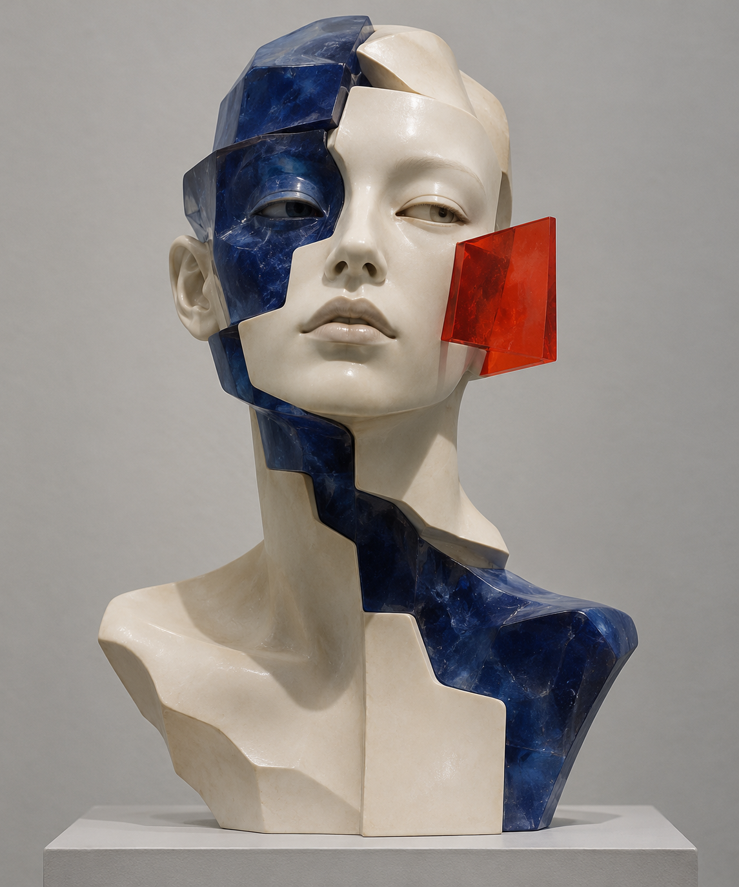
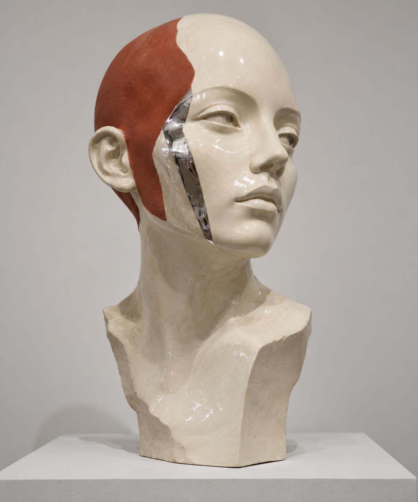
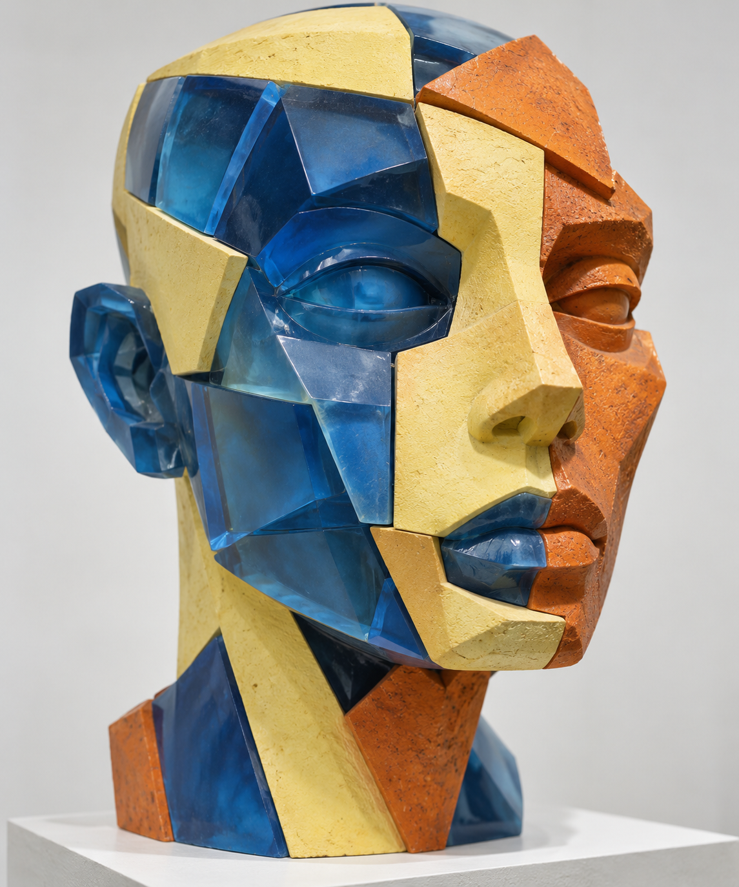
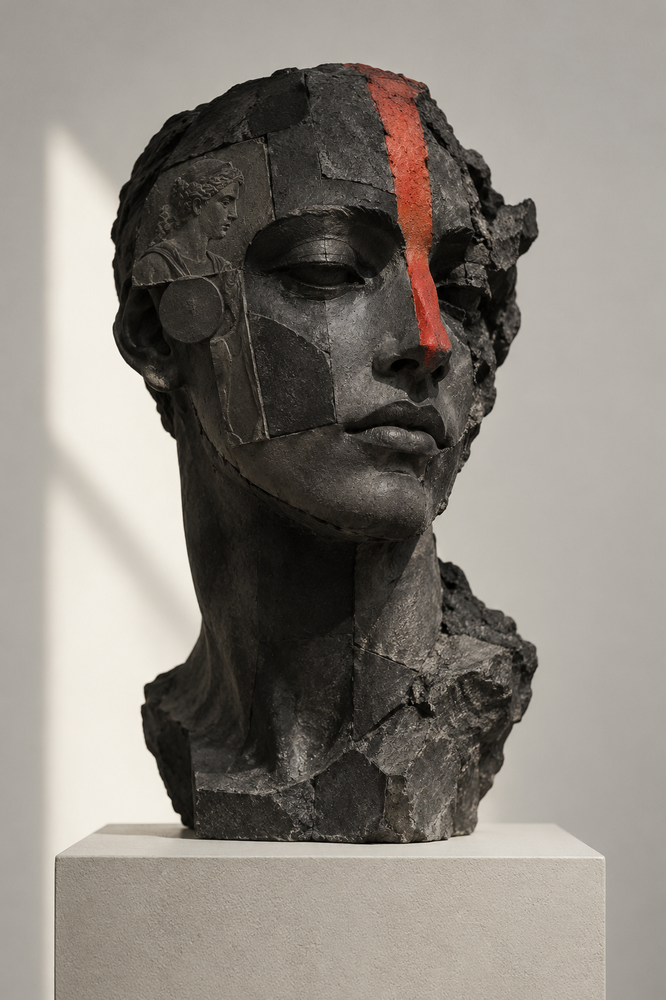

Afterimage No. 01
Plaster, pigment, digital transfer
A study of faces, fragments, and the afterlife of an image.
Original portraits, endlessly reassembled.

One face, many possible originals.
Each study begins where the last one ends.



KINGKAZMAX is an independent artist exploring the space between the digital image and the physical object. Faces are treated as editable coordinates: copied, shifted, worn down, and brought back into focus as new forms.
Each work begins with a familiar visual vocabulary, then moves through a process of translation. A small change in color, contour, or material makes a neighboring identity—close enough to recognize, distinct enough to belong to itself.
TRY THE PORTRAIT LAB ↗Upload a portrait or start with a generated face.
Choose a material, shift the image, make it yours.
Your image stays in this browser.
Set the material for your new original.
Move the sliders to shift your image.
Upload a portrait
or start with a studio face